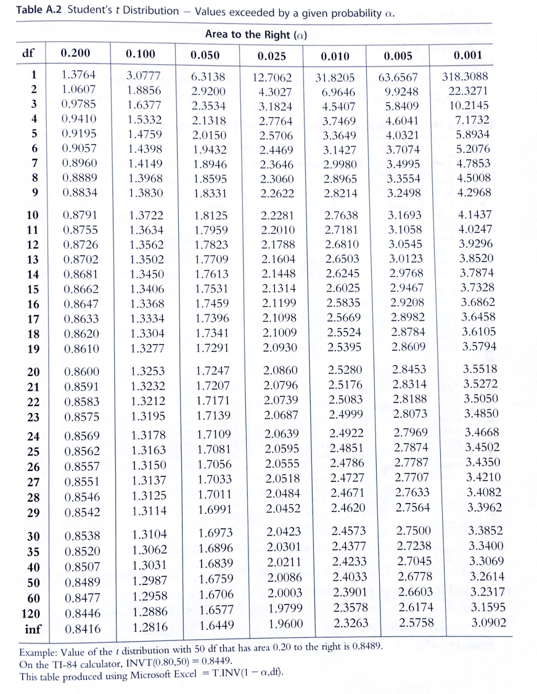
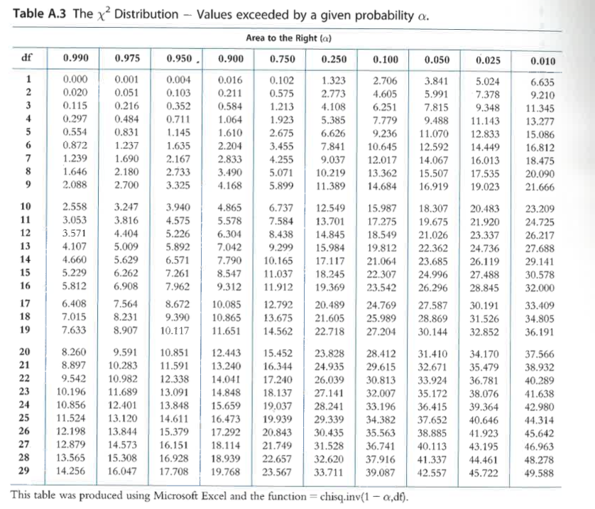
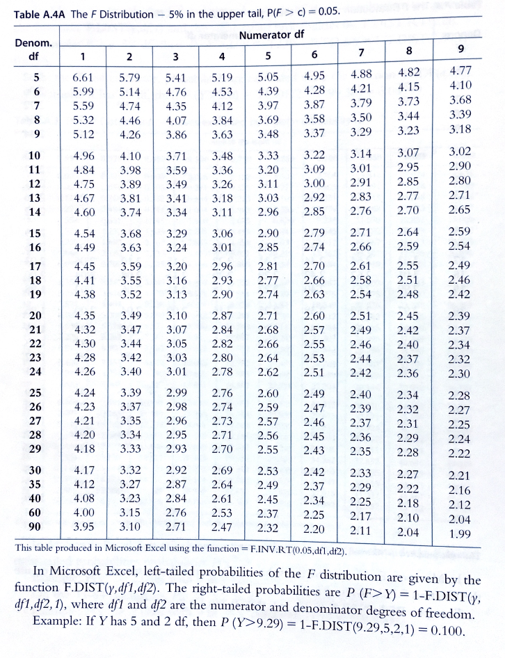
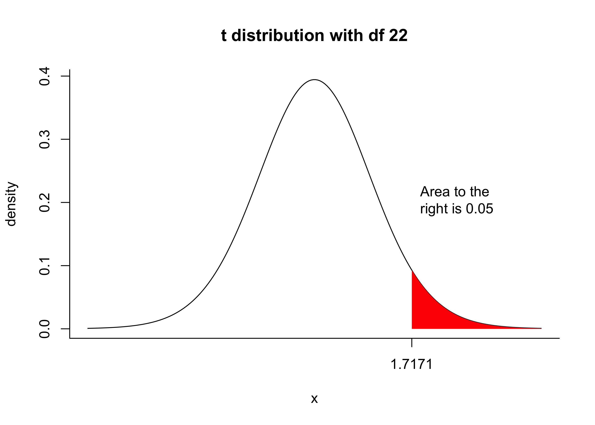
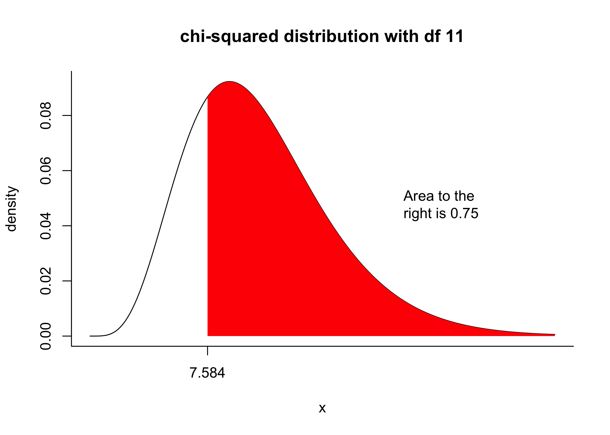
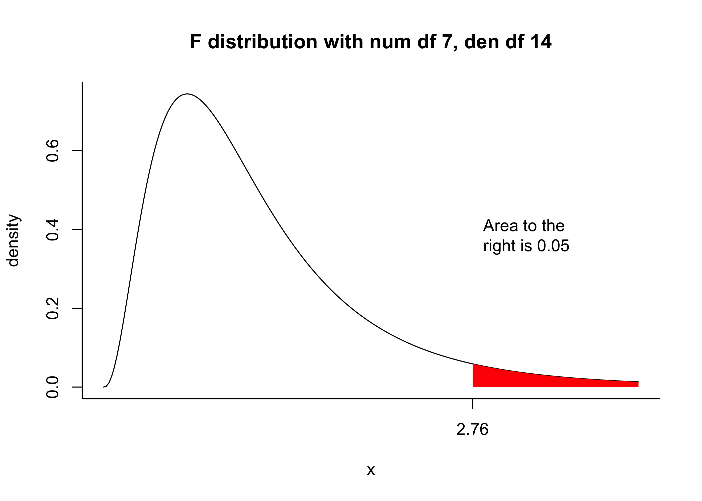

0.2 0.1 0.05 0.025 0.01 0.005 0.001
1 1.3764 3.0777 6.3138 12.7062 31.8205 63.6567 318.3088
2 1.0607 1.8856 2.9200 4.3027 6.9646 9.9248 22.3271
3 0.9785 1.6377 2.3534 3.1824 4.5407 5.8409 10.2145
4 0.9410 1.5332 2.1318 2.7764 3.7469 4.6041 7.1732
5 0.9195 1.4759 2.0150 2.5706 3.3649 4.0321 5.8934
6 0.9057 1.4398 1.9432 2.4469 3.1427 3.7074 5.2076
7 0.8960 1.4149 1.8946 2.3646 2.9980 3.4995 4.7853
8 0.8889 1.3968 1.8595 2.3060 2.8965 3.3554 4.5008
9 0.8834 1.3830 1.8331 2.2622 2.8214 3.2498 4.2968
10 0.8791 1.3722 1.8125 2.2281 2.7638 3.1693 4.1437
11 0.8755 1.3634 1.7959 2.2010 2.7181 3.1058 4.0247
12 0.8726 1.3562 1.7823 2.1788 2.6810 3.0545 3.9296
13 0.8702 1.3502 1.7709 2.1604 2.6503 3.0123 3.8520
14 0.8681 1.3450 1.7613 2.1448 2.6245 2.9768 3.7874
15 0.8662 1.3406 1.7531 2.1314 2.6025 2.9467 3.7328
16 0.8647 1.3368 1.7459 2.1199 2.5835 2.9208 3.6862
17 0.8633 1.3334 1.7396 2.1098 2.5669 2.8982 3.6458
18 0.8620 1.3304 1.7341 2.1009 2.5524 2.8784 3.6105
19 0.8610 1.3277 1.7291 2.0930 2.5395 2.8609 3.5794
20 0.8600 1.3253 1.7247 2.0860 2.5280 2.8453 3.5518
21 0.8591 1.3232 1.7207 2.0796 2.5176 2.8314 3.5272
22 0.8583 1.3212 1.7171 2.0739 2.5083 2.8188 3.5050
23 0.8575 1.3195 1.7139 2.0687 2.4999 2.8073 3.4850
24 0.8569 1.3178 1.7109 2.0639 2.4922 2.7969 3.4668
25 0.8562 1.3163 1.7081 2.0595 2.4851 2.7874 3.4502
26 0.8557 1.3150 1.7056 2.0555 2.4786 2.7787 3.4350
27 0.8551 1.3137 1.7033 2.0518 2.4727 2.7707 3.4210
28 0.8546 1.3125 1.7011 2.0484 2.4671 2.7633 3.4082
29 0.8542 1.3114 1.6991 2.0452 2.4620 2.7564 3.3962
30 0.8538 1.3104 1.6973 2.0423 2.4573 2.7500 3.3852
40 0.8507 1.3031 1.6839 2.0211 2.4233 2.7045 3.3069
50 0.8489 1.2987 1.6759 2.0086 2.4033 2.6778 3.2614
60 0.8477 1.2958 1.6706 2.0003 2.3901 2.6603 3.2317
120 0.8446 1.2886 1.6577 1.9799 2.3578 2.6174 3.1595
Inf 0.8416 1.2816 1.6449 1.9600 2.3263 2.5758 3.0902Make these tables in R
$$
$$
Mohr, Wilson, and Freund (2021) include in the back of their statistics textbook the t-table and chi-squared tables shown below:



Your tasks are to generate:
The above tables in R. For each table your output should be a matrix with appropriate row and column names, as below. Try to minimize the amount of code you need to write by using clever loops! Round to the same number of digits as in the original tables.
A plot to accompany each table like the plots shown below. Each plot will show an example of a single arbitrarily chosen cell in the table.
Your t-table matrix should look like this:
The plot accompanying the t-table should look like this (but choose a different cell of the table to illustrate):

Your chi-squared table should look like this:
0.99 0.975 0.95 0.9 0.75 0.25 0.1 0.05 0.025 0.01
1 0.000 0.001 0.004 0.016 0.102 1.323 2.706 3.841 5.024 6.635
2 0.020 0.051 0.103 0.211 0.575 2.773 4.605 5.991 7.378 9.210
3 0.115 0.216 0.352 0.584 1.213 4.108 6.251 7.815 9.348 11.345
4 0.297 0.484 0.711 1.064 1.923 5.385 7.779 9.488 11.143 13.277
5 0.554 0.831 1.145 1.610 2.675 6.626 9.236 11.070 12.833 15.086
6 0.872 1.237 1.635 2.204 3.455 7.841 10.645 12.592 14.449 16.812
7 1.239 1.690 2.167 2.833 4.255 9.037 12.017 14.067 16.013 18.475
8 1.646 2.180 2.733 3.490 5.071 10.219 13.362 15.507 17.535 20.090
9 2.088 2.700 3.325 4.168 5.899 11.389 14.684 16.919 19.023 21.666
10 2.558 3.247 3.940 4.865 6.737 12.549 15.987 18.307 20.483 23.209
11 3.053 3.816 4.575 5.578 7.584 13.701 17.275 19.675 21.920 24.725
12 3.571 4.404 5.226 6.304 8.438 14.845 18.549 21.026 23.337 26.217
13 4.107 5.009 5.892 7.042 9.299 15.984 19.812 22.362 24.736 27.688
14 4.660 5.629 6.571 7.790 10.165 17.117 21.064 23.685 26.119 29.141
15 5.229 6.262 7.261 8.547 11.037 18.245 22.307 24.996 27.488 30.578
16 5.812 6.908 7.962 9.312 11.912 19.369 23.542 26.296 28.845 32.000
17 6.408 7.564 8.672 10.085 12.792 20.489 24.769 27.587 30.191 33.409
18 7.015 8.231 9.390 10.865 13.675 21.605 25.989 28.869 31.526 34.805
19 7.633 8.907 10.117 11.651 14.562 22.718 27.204 30.144 32.852 36.191
20 8.260 9.591 10.851 12.443 15.452 23.828 28.412 31.410 34.170 37.566
21 8.897 10.283 11.591 13.240 16.344 24.935 29.615 32.671 35.479 38.932
22 9.542 10.982 12.338 14.041 17.240 26.039 30.813 33.924 36.781 40.289
23 10.196 11.689 13.091 14.848 18.137 27.141 32.007 35.172 38.076 41.638
24 10.856 12.401 13.848 15.659 19.037 28.241 33.196 36.415 39.364 42.980
25 11.524 13.120 14.611 16.473 19.939 29.339 34.382 37.652 40.646 44.314
26 12.198 13.844 15.379 17.292 20.843 30.435 35.563 38.885 41.923 45.642
27 12.879 14.573 16.151 18.114 21.749 31.528 36.741 40.113 43.195 46.963
28 13.565 15.308 16.928 18.939 22.657 32.620 37.916 41.337 44.461 48.278
29 14.256 16.047 17.708 19.768 23.567 33.711 39.087 42.557 45.722 49.588The plot accompanying the chi-squared table should look like this (but choose a different cell of the table to illustrate):

Your F-table matrix should look like this:
1 2 3 4 5 6 7 8 9
5 6.61 5.79 5.41 5.19 5.05 4.95 4.88 4.82 4.77
6 5.99 5.14 4.76 4.53 4.39 4.28 4.21 4.15 4.10
7 5.59 4.74 4.35 4.12 3.97 3.87 3.79 3.73 3.68
8 5.32 4.46 4.07 3.84 3.69 3.58 3.50 3.44 3.39
9 5.12 4.26 3.86 3.63 3.48 3.37 3.29 3.23 3.18
10 4.96 4.10 3.71 3.48 3.33 3.22 3.14 3.07 3.02
11 4.84 3.98 3.59 3.36 3.20 3.09 3.01 2.95 2.90
12 4.75 3.89 3.49 3.26 3.11 3.00 2.91 2.85 2.80
13 4.67 3.81 3.41 3.18 3.03 2.92 2.83 2.77 2.71
14 4.60 3.74 3.34 3.11 2.96 2.85 2.76 2.70 2.65
15 4.54 3.68 3.29 3.06 2.90 2.79 2.71 2.64 2.59
16 4.49 3.63 3.24 3.01 2.85 2.74 2.66 2.59 2.54
17 4.45 3.59 3.20 2.96 2.81 2.70 2.61 2.55 2.49
18 4.41 3.55 3.16 2.93 2.77 2.66 2.58 2.51 2.46
19 4.38 3.52 3.13 2.90 2.74 2.63 2.54 2.48 2.42
20 4.35 3.49 3.10 2.87 2.71 2.60 2.51 2.45 2.39
21 4.32 3.47 3.07 2.84 2.68 2.57 2.49 2.42 2.37
22 4.30 3.44 3.05 2.82 2.66 2.55 2.46 2.40 2.34
23 4.28 3.42 3.03 2.80 2.64 2.53 2.44 2.37 2.32
24 4.26 3.40 3.01 2.78 2.62 2.51 2.42 2.36 2.30
25 4.24 3.39 2.99 2.76 2.60 2.49 2.40 2.34 2.28
26 4.23 3.37 2.98 2.74 2.59 2.47 2.39 2.32 2.27
27 4.21 3.35 2.96 2.73 2.57 2.46 2.37 2.31 2.25
28 4.20 3.34 2.95 2.71 2.56 2.45 2.36 2.29 2.24
29 4.18 3.33 2.93 2.70 2.55 2.43 2.35 2.28 2.22
30 4.17 3.32 2.92 2.69 2.53 2.42 2.33 2.27 2.21
35 4.12 3.27 2.87 2.64 2.49 2.37 2.29 2.22 2.16
40 4.08 3.23 2.84 2.61 2.45 2.34 2.25 2.18 2.12
60 4.00 3.15 2.76 2.53 2.37 2.25 2.17 2.10 2.04
90 3.95 3.10 2.71 2.47 2.32 2.20 2.11 2.04 1.99The plot accompanying the chi-squared table should look like this (but choose a different cell of the table to illustrate):

References
Mohr, Donna L, William J Wilson, and Rudolf J Freund. 2021. Statistical Methods. Academic Press.